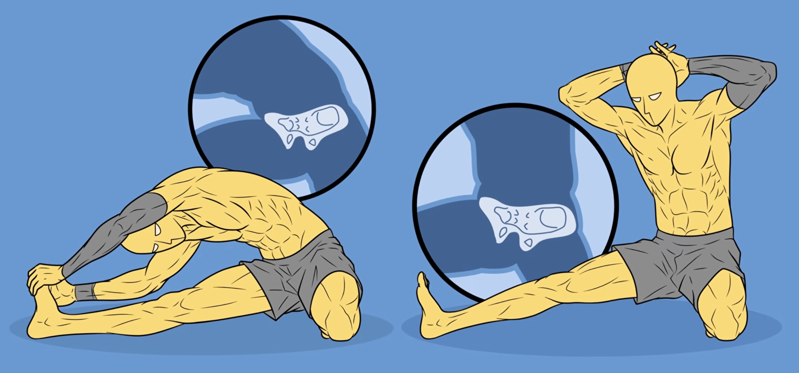
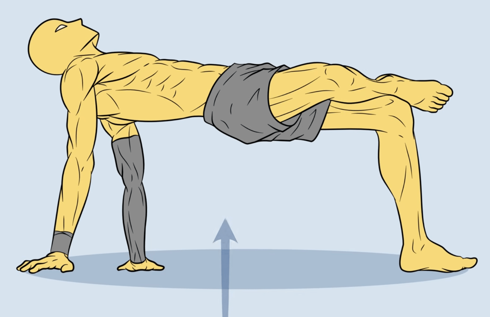
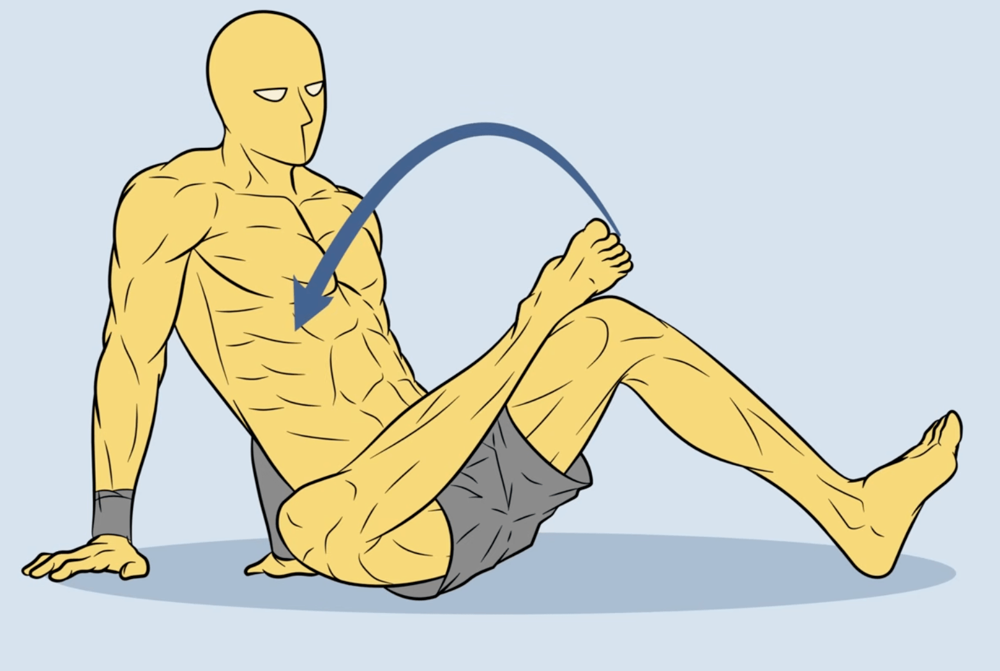
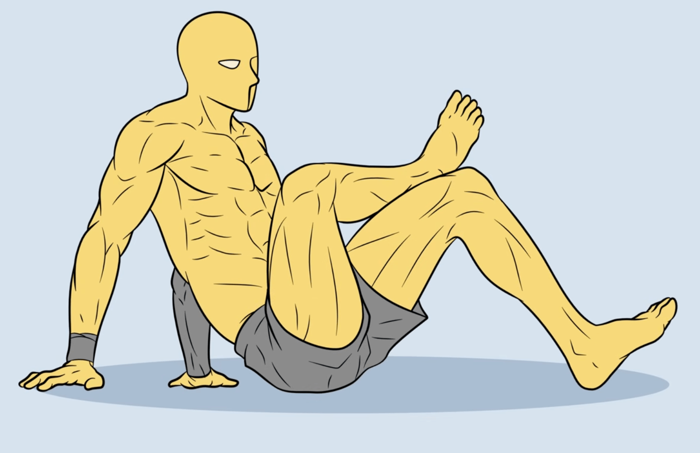

→
→

| Ejercicio | Equipo | Nivel | Ref |
|---|---|---|---|
| Rotación de hombros con banda | banda | todos | |
| Círculos de cadera (hip circles) | ninguno | todos | |
| Movilidad de tobillo (dorsiflexión en pared) | ninguno | todos — clave para pistol |
|
| Pasos laterales con mini banda en piernas | banda | todos | |
| Colgado pasivo en barra | barra | todos | |
| Downward dog a estocada profunda (flow) | ninguno | todos | |
| Sentadilla cosaca arrodillada a estiramiento isquiotibial | ninguno | todos |
 |
| Puente de glúteo con rotación | ninguno | todos |
 → → |
| Rotación interna de cadera sentado | ninguno | todos |
|
| Rotación interna de cadera sentado (2) | ninguno | todos — repetición más adelante en el video |
|
| Ejercicio | Equipo | Nivel | Ref |
|---|---|---|---|
| Dominadas estrictas | barra | dominado — variar tempo/agarre | |
| Dominadas con pausa arriba | barra | dominado | |
| Remo en aros | aros | dominado | |
| Dominadas archer | barra | en progreso (hacia una mano) | |
| Remo invertido en aros a una pierna | aros | en progreso |
| Ejercicio | Equipo | Nivel | Ref |
|---|---|---|---|
| Fondos en aros | aros | dominado | |
| Flexiones con pausa/tempo lento | ninguno (+ pesa lastrada opcional) | dominado | |
| Pike push-up | ninguno | en progreso (hacia HSPU) | |
| Flexiones archer | ninguno | en progreso |
 |
| Press con banda (hombro) | banda | dominado |
| Ejercicio | Equipo | Nivel | Ref |
|---|---|---|---|
| Sentadilla búlgara con banda de asistencia (progresión pistol) | banda | en progreso | |
| Sentadilla a caja baja a una pierna | ninguno | en progreso | |
| Zancada búlgara con pesa de 10kg | pesa | dominado | |
| Elevación de talones a una pierna | ninguno | dominado — accesorio tobillo | |
| Nordic curl asistido con banda | banda | en progreso |
 |
| Ejercicio | Equipo | Nivel | Ref |
|---|---|---|---|
| Front lever tuck hold | barra | dominado — progresar a advanced tuck |
 |
| L-sit (aros o piso) | aros / ninguno | en progreso | |
| Dragon flag negativo | ninguno (superficie) | en progreso |
 |
| Hollow body hold | ninguno | dominado |
 |
| Plancha con deslizamiento en aros | aros | en progreso |
| Ejercicio | Equipo | Nivel | Ref |
|---|---|---|---|
| Handstand contra pared | ninguno | dominado | |
| Handstand freestanding (intentos, superar 2seg) | ninguno | en progreso | |
| Front lever advanced tuck | barra | en progreso |
 |
| Skin the cat | aros | por evaluar |
 |
| L-sit a V-sit | aros | en progreso |
| Ejercicio | Equipo | Nivel | Ref |
|---|---|---|---|
| Rotación externa de hombro con banda | banda | dominado | |
| Face pull con banda | banda | dominado | |
| Curl de muñeca/antebrazo con pesa 10kg | pesa | dominado | |
| Dorsiflexión de tobillo con banda | banda | en progreso — clave para pistol |
 |
| Pallof press con banda | banda | dominado |
| Ejercicio | Equipo | Nivel | Ref |
|---|---|---|---|
| Estiramiento de isquios | ninguno | todos | |
| Estiramiento de hombro (cross-body / con banda detrás espalda) | ninguno / banda | todos | |
| Estiramiento de cadera (pigeon pose) | ninguno | todos | |
| Estiramiento de tobillo/pantorrilla contra pared | ninguno | todos |